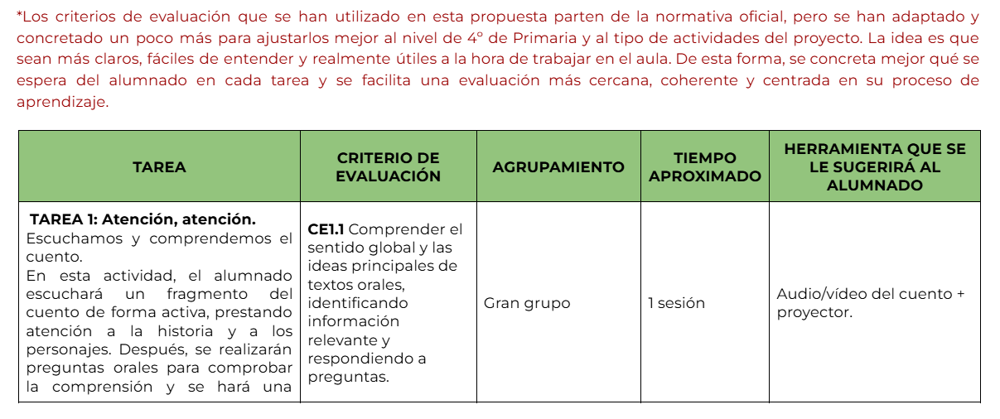
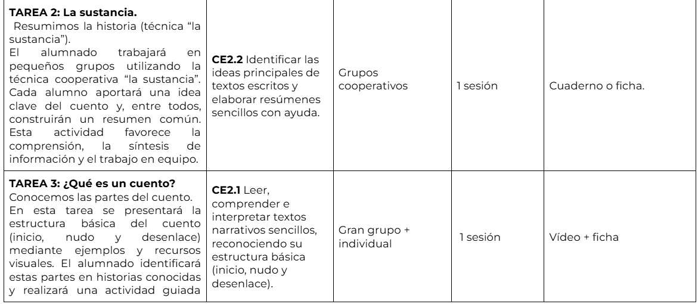
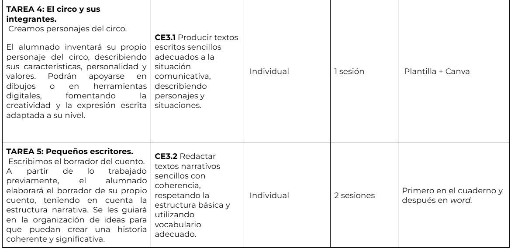
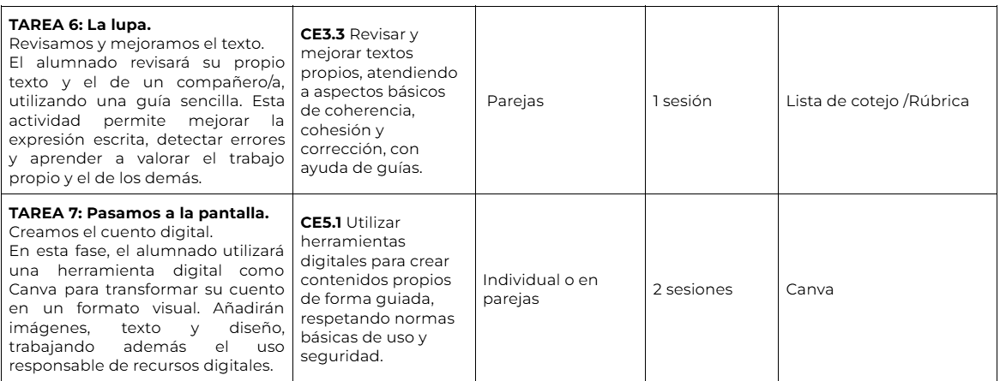
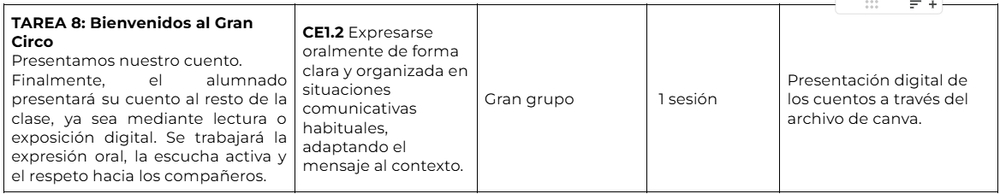

Guía didáctica
Guía didáctica
Este proyecto está diseñado para alumnado de 4º de Educación Primaria y se basa en metodologías activas y aprendizaje cooperativo.
Se trabajan:
-comprensión lectora
-expresión escrita
-competencia digital
-educación emocional y en valores.
Además, se aplican medidas de atención a la diversidad mediante apoyos visuales, adaptación de tareas y docencia compartida dentro del aula ordinaria.
Las actividades se relacionan con los criterios de evaluación del área de Lengua Castellana y Literatura de 4º de Primaria en Andalucía.




